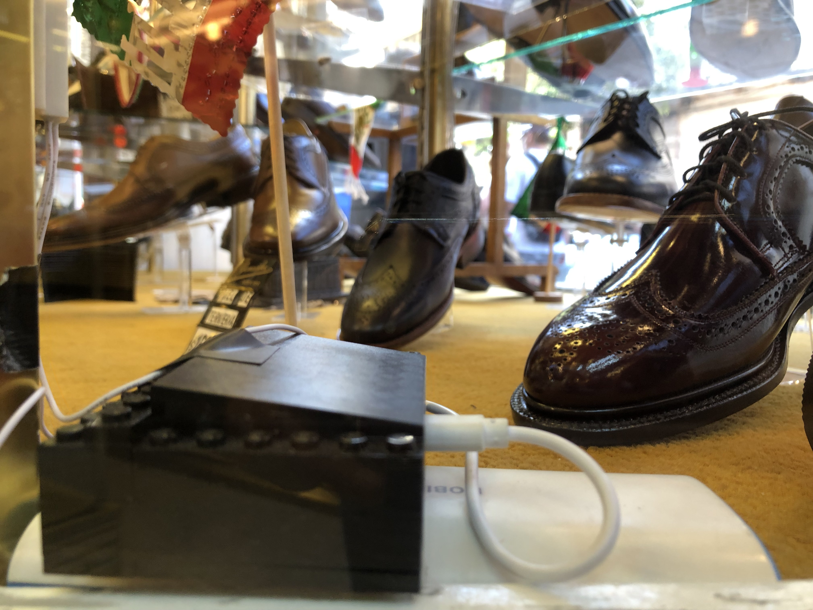
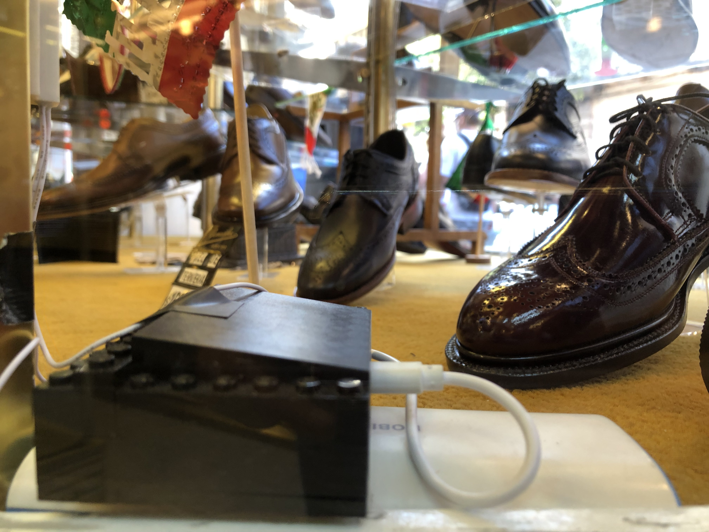

Uruguay 25: Technology, appropriation and memory
Categories: IoT, Interactive Installation
Dates:2019
Website: www.uruguay25.mx
GitHub: https://github.com/psotresc/Uruguay25-Interactivo2
It is a participatory project that sought to generate symbolic appropriation by merchants and passers-by with the building located at number 25 on Calle de República de Uruguay for its next opening as a Cultural Center, through an interactive installation generated in conjunction with tenants, so that the public, when interacting with the installation, gives visibility to the building and premises. The project was carried out in collaboration with Carlos Guerrero Millán, Cristina Rivas Herrera as part of the terminal research of the Master in Design, Information and Communication of the Autonomous Metropolitan University of the Cuajimalpa Unit. It encompassed theoretical-conceptual research, the creation of an interdisciplinary methodology and the development of a high-fidelity prototype, which was presented to the public on August 31, 2019 and September 6.
Programming Languages
Python
C#
Javascript
PHP
C++
Software
Arduino
TD
Unity 3D
After Effects
illustrator
Photoshop
In order to adapt to the commercial vocation of the street and as part of the investigation, it was decided to use a showcase that would show three interactives according to the different moments or times in the Republic of Uruguay and also refers to the past, present and future of the building and of the street.
The first interactive was presented from 9 a.m. to 1 p.m. and had as its main theme the memories and stories about the building and the street and that people could discover through the installation. For this, it was decided to capture the silhouette of people so that with it they could reveal secrets of the building's past, so that people reflected in the building. For this, a Kinect V2 was used to recover the depth image and mix it with the collected images.

The second interactive, was exhibited between 13:00 and 17:00, and reflected the commercial and entertainment dynamics that make the block different from others. Innovation, flavors and tradition come together in the game "Shopping in Uruguay", this is a game that reacts to the dynamics of the street and for this, in collaboration with the tenants, various sensors were placed in their premises, of which represented the dynamics of their businesses and the street, these sensors sent signals that became icons within the game and that the player had to collect to earn points and be able to earn rewards on the premises. We worked with a total of 4 businesses using photoresistors, presence sensors, vibration sensors, buttons and magnetic reed sensors connected to Node MCU modules that sent the WIFI signals

Finally, the third interactive that was presented from 5 to 9 p.m. sought to show the future and the possibilities of the next Cultural Center and allowed the public to draw what they would like to see in that building through the movement of their body and thus detonate the appropriation of space. To do this, it could carry out the digital intervention of photographs of the building, for the interactive, a 360-degree image survey of the building was carried out, which the user could explore through the use of buttons and select a space to intervene through the movement of his body. For this, the Kinect V2 was used to track the right wrist and use it to draw.

The general project Uruguay 25 Art, Sciences, Humanities and Citizenship, is in the development and planning phase in charge of the General Coordination of Dissemination of the UAM. The research project of the MADIC students in the building was carried out with the support of the Academic and Cultural Directorate of this Coordination.
More information on the website :
http://uruguay25.mx


 
